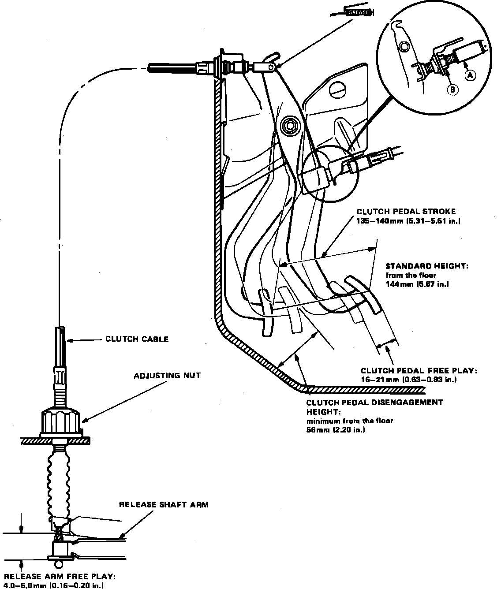

Clutch: Adjustments
Fig. 2 Clutch Pedal Adjustments:

1. Turn cable adjusting nut located on cable casing near transaxle, Fig. 2, until freeplay at release arm is 0.16-0.20 inch.
2. After adjusting release arm freeplay, check clutch pedal height at the clutch release point and clutch pedal freeplay. It may be necessary to pull back carpet to obtain accurate pedal release height measurement.
3. Minimum pedal height above floor at clutch release point should be 2.20 inches.
4. Clutch pedal free travel should be 0.63-0.83 inch.
5. Clutch pedal stoke should be 5.51-5.71 inches.
6. If specified clearances cannot be obtained, inspect clutch and release mechanism and repair as needed.